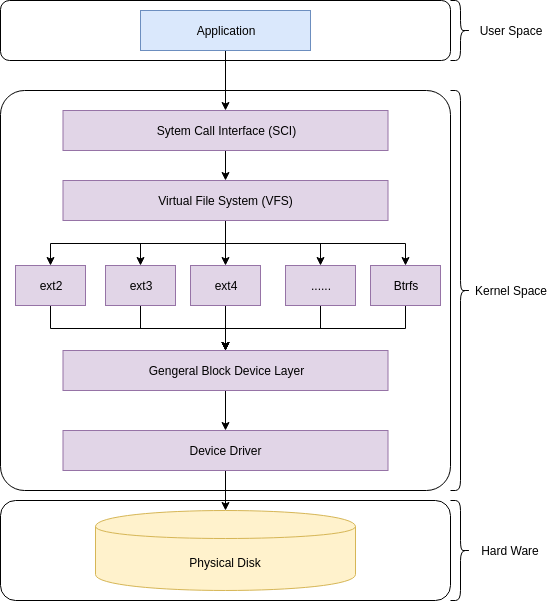
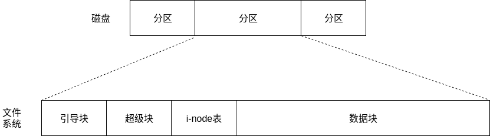
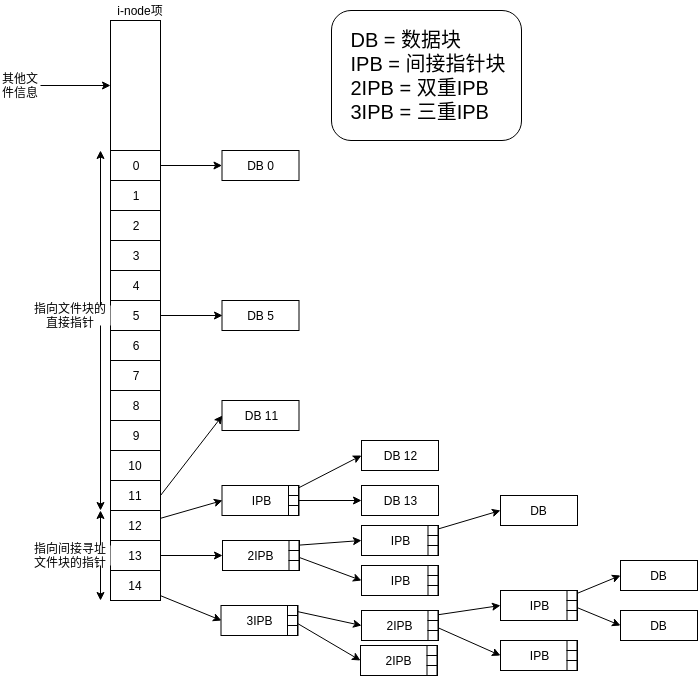
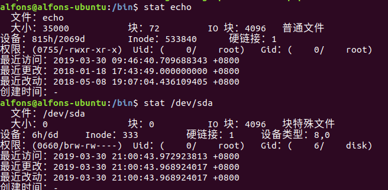
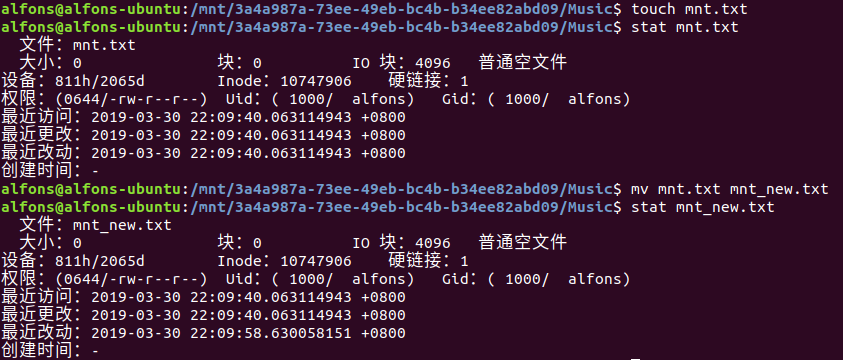
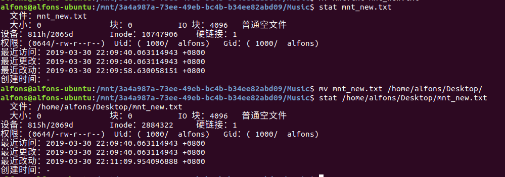
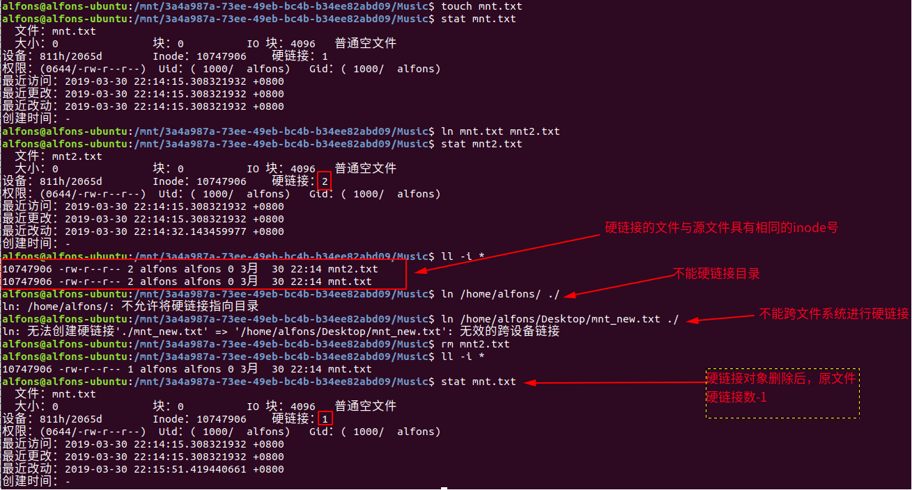
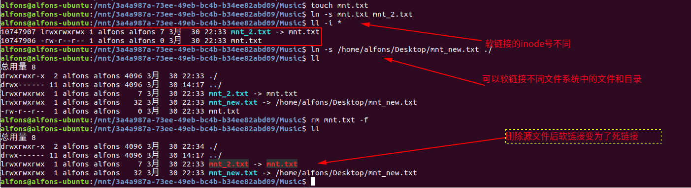
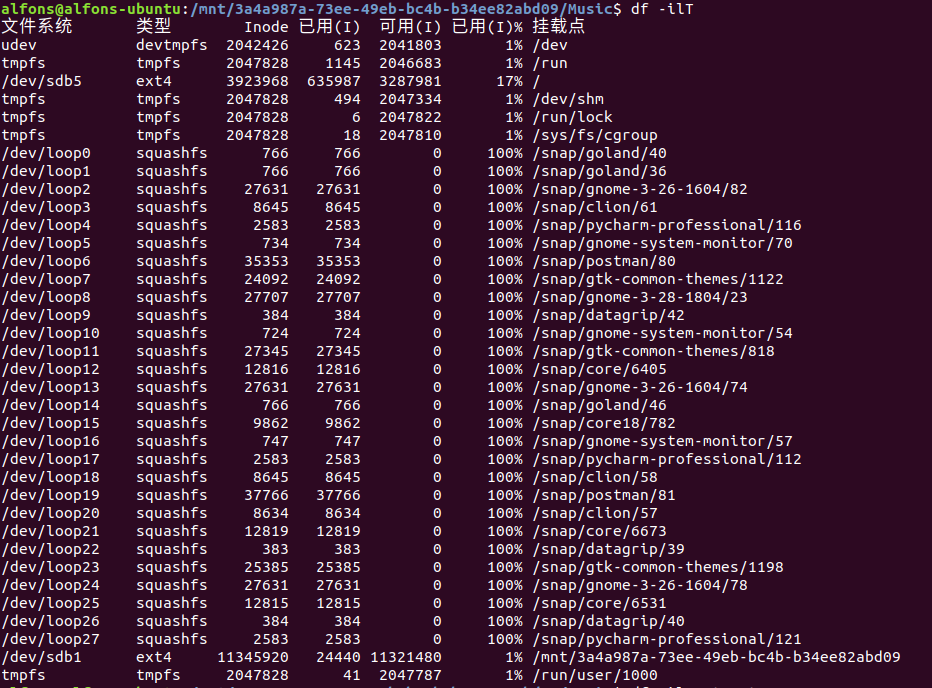
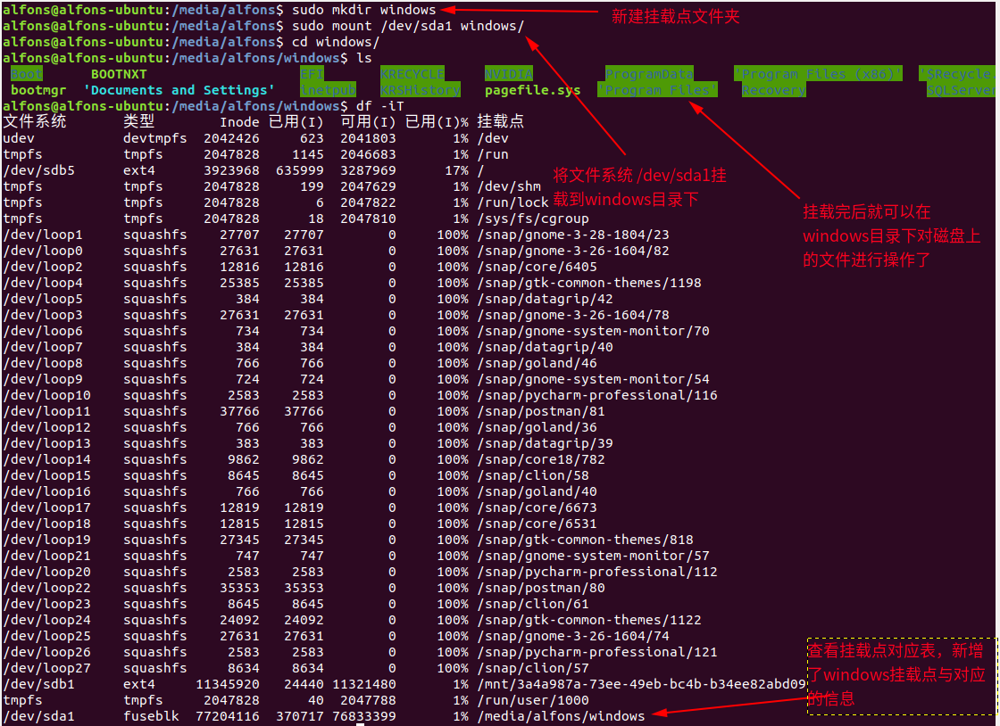

Linux系统编程:文件_文件系统
本篇文章主要记录了《Linux/Unix系统编程手册》第14章的学习笔记。
文件
在Linux系统中，一切皆文件！！！ 所有的，包括文档、目录(文件夹)、键盘、监视器、硬盘、socket、IPC(进程间通信)都可以定义为 文件空间下的字节流，操作系统只需要对 抽象出来的字节流 进行操作，而不用管对象究竟是什么东西。
接下来是文件的比较关键的知识点，包括：设备文件、文件目录和挂载点、文件系统等。
设备文件
Linux中的 设备 并不是单指 口语中的设备(像输入输出设备)，还包括 磁盘 这种 不像"设备"的设备 (之前一直将磁盘归为非设备)，以及 并不存在相应硬件的虚拟设备。
每种设备类型都有 与之相对应的设备驱动程序，用来处理设备的所有I/O请求。例如键盘有键盘的驱动程序，磁盘也分为多种不同的驱动程序，来作为系统和物理硬件连接的桥梁。
但是，每种设备驱动程序所 提供的接口一致，这隐藏了每个设备在操作方面的差异，从而满足了I/O操作的通用性。所以我们可以 使用相同的系统调用操作不同的设备文件。
现在的 /dev 目录下，记录了系统中 实际存在的设备条目。早期的Linux版本中，/dev 下包含了所有可能的设备的条目，导致了程序执行效率降低(毕竟要扫描整个目录)，以及无法发现实际存在哪些设备。后来的版本中引入了 udev程序，解决了上述问题。
# /dev 目录下的设备条目
alfons@alfons-ubuntu:~$ ll /dev/
总用量 4
drwxr-xr-x 21 root root 4800 3月 30 14:58 ./
drwxr-xr-x 27 root root 4096 3月 21 21:21 ../
crw-r--r-- 1 root root 10, 235 3月 30 14:58 autofs
drwxr-xr-x 2 root root 840 3月 30 14:58 block/
...
brw-rw---- 1 root disk 8, 0 3月 30 14:58 sda
brw-rw---- 1 root disk 8, 1 3月 30 14:58 sda1
brw-rw---- 1 root disk 8, 2 3月 30 14:58 sda2
brw-rw---- 1 root disk 8, 3 3月 30 14:58 sda3
brw-rw---- 1 root disk 8, 4 3月 30 14:58 sda4
...
本篇主要记录的是在 磁盘设备 上的操作。

如上图，描述的是磁盘文件系统的结构图：
- 处于用户态的应用程序 调用库函数(如libc)接口 对文件进行操作。
- 库函数进行系统调用，进入内核态。
- 由于 文件系统的类型 多种多样，为了规避不同文件系统的差异，在文件系统的上层增加一层 VFS(虚拟文件系统)。
- VFS针对文件系统定义了一套通用操作，系统调用通过VFS提供的API对文件进行操作。
- 每种文件系统都会提供VFS API接口的实现。
- 各种文件系统对文件的管理方式有所不同，Linux下的文件系统类型包括：ext2、ext3、ext4、Reiserfs、VFAT、NFS等。
- 通用块设备层(General Block Device Layer) 的目的是和 VFS 类似，为的是 规避下层不同的硬件驱动带来的差异，统一硬件驱动的接口给文件系统层。
- 硬件驱动会根据磁盘的不同使用不同的驱动对磁盘进行操作。
文件系统
文件系统是磁盘分区的一种类型，用来存放常规文件。
在Linux中，采用将磁盘进行分区的方式对磁盘资源进行管理。将一大块的磁盘切分成一个个分区的好处在于：
- 易于使用 – 更容易恢复损坏的文件系统或操作系统安装。
- 性能 – 较小的文件系统更有效。
- 安全 – 将用户文件的操作系统文件的分离，保证了系统的安全性。
- 备份和恢复 – 简化了备份和恢复。
- 稳定性和效率 – 通过格式化磁盘与不同的块大小磁盘空间，可以提高效率。例如，如果数据是很多小文件，最好使用小块大小。
- 测试 – 从单个硬盘启动多个操作系统，如Linux、Windows和FreeBSD。
Linux下的可以将磁盘划分为一个或多个分区，内核将每个分区视为位于 /dev 路径下的单独设备。
磁盘分区可以容纳任何类型的信息，但主要的类型有下面三种
- 文件系统 - 用来存放常规文件和目录。
- 数据区域 - 作为裸设备对其进行访问，一些数据库管理系统会使用该技术。
- 交换区域 - 供内核的内存管理使用。
文件系统结构
这节的内容将以 ext2文件系统 为基础来记录。
在文件系统中，用来分配空间的基本单位是 逻辑块，也就是所在磁盘上的若干个物理块，大小可以为1024、2048、4096等(单位字节)。
磁盘分区和文件系统的关系图如下：

- 引导块 - 引导块不被文件系统使用，只是包含用来引导操作系统的信息。虽然操作系统只需要一个引导块，但是所有的文件系统都设有引导块。
- 超级块 - 包含文件系统有关的参数。
- inode表容量;
- 文件系统中逻辑块的大小，单块大小，可以为不同的字节。
- 以逻辑块计，文件系统的大小。
- inode表 - 文件系统中的每个文件或目录所在inode表中都有对应的唯一一条记录，记录了关乎文件的各种信息。
- 数据块 - 存放数据的块，以构成驻留于文件系统之上的文件和目录。
inode
文件系统的inode表会包含一个inode节点，节点的标识采用的是inode表中的顺续位置，inode维护的信息包括：
- 文件类型(常规文件、目录、符号链接、字符设备等)
- 文件所属的用户(UID)
- 文件所属的组(GID)
- 文件的访问权限(-rwxrw-r--)
- 时间戳(包括ctime、atime、mtime)
- 指向文件的 硬链接数 (硬链接会共享文件的inode号，并将文件计数器加一)
- 文件的大小
- 实际分配的文件块数量
- 指向文件数据块的指针
对于指向文件数据块的指针，有些意思。

如上图所示，inode共包含了15个指针，前12个指针指向的是 文件前12个块在文件系统中的位置。IPB、2IPB、3IPB 为指向指针块的指针。指针块中指针的数量取决与文件系统中块的大小。
假设每个 指针的大小为4bytes，文件系统中 块的大小为1024bytes，那么一个 IPB 所能指向的文件块的数量为 256，所能指向的空间大小为 256 × 1024 = 256KB。2IPB 为 256 × 256 × 1024 = 64MB，3IPB 为 256 × 256 × 256 × 1024 = 16GB。
通过 stat 命令我们可以看到文件的inode信息，不同的文件类型展示的信息有所不同。

拷贝和移动文件
在 同一个文件系统中 移动文件，不会改变该文件的基本信息(时间信息除外)。

在 不同一个文件系统中 移动文件，则相当于是在目的目录新建一个同名文件，读取源文件内容并写入目的文件，然后将本地的文件删除，最终结果是，inode号改变了，毕竟两个文件系统拥有不同的inode表管理文件。

所以在同一个文件系统中，拷贝移动文件很快，而在不同的文件系统中，拷贝移动文件却很慢。
硬链接和软链接
在Linux中，硬链接对文件的特性如下：
- 文件有相同的 inode 及 数据块；
- 不能交叉文件系统进行硬链接的创建；
- 不能对目录进行创建，只可对已存在的文件创建；
- 删除一个硬链接文件并不影响其他有相同 inode 号的文件。

软链接和硬链接不同，软链接本身就是文件，有自己的inode信息，但数据块指向的是原文件:
- 软链接有自己的文件属性及权限等；
- 可对不存在的文件或目录创建软链接；
- 软链接可交叉文件系统；
- 软链接可对文件或目录创建；
- 创建软链接时，链接计数 i_nlink 不会增加；
- 删除软链接并不影响被指向的文件，但若被指向的原文件被删除，则相关软连接被称为死链接（即 dangling link，若被指向路径文件被重新创建，死链接可恢复为正常的软链接）。

文件目录和挂载点
上面的介绍了文件系统，其实它就是磁盘分区的一个类型，有了磁盘分区，我们还需要将分区挂载到文件目录上才可以使用磁盘上的空间。
在Windows下，文件的分区都以特殊的盘符为单位，每一个盘符所代表的分区都是一个文件系统，它们之间相互独立。
而在Linux中，所有的文件系统(下面会说) 都位于根目录树下，树根就是根目录 "/"。其他的文件系统都挂在在根目录下。
/ 根目录
├── bin 存放用户二进制文件
├── boot 存放内核引导配置文件
├── dev 存放设备文件
├── etc 存放系统配置文件
├── home 用户主目录
├── lib 动态共享库
├── lost+found 文件系统恢复时的恢复文件
├── media 可卸载存储介质挂载点
├── mnt 文件系统临时挂载点
├── opt 附加的应用程序包
├── proc 系统内存的映射目录，提供内核与进程信息
├── root root 用户主目录
├── sbin 存放系统二进制文件
├── srv 存放服务相关数据
├── sys sys 虚拟文件系统挂载点
├── tmp 存放临时文件
├── usr 存放用户应用程序
└── var 存放邮件、系统日志等变化文件
使用 df 命令可以查看系统的挂载信息(当然其他命令也行，但就喜欢用df)。

下面会演示如何挂载一个 文件系统(磁盘分区) 到目录树上。

总结
- 在Linux中，一切皆文件！
- 文件系统中有两处对不同的驱动进行了接口的统一
- VFS对文件系统驱动接口的统一;
- 通用块设备层对设备驱动接口的统一。
- 文件系统是磁盘分区的一种类型。
- 磁盘分区需要进行挂载操作才能使用。